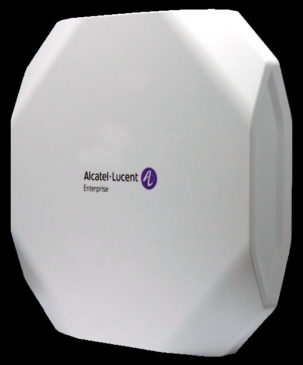

R（触发场景）
- 超高密 + 6GHz 频谱的 Wi-Fi 6E 旗舰选型（对标 1351 的 6E 版）
- 双 10GE 上联 + bt 49W 供电预算核对
- 与 1540（Wi-Fi 7 旗舰）做代际对比
I（核心理念)
Wi-Fi 6E 室内旗舰"五射频"：6GHz High 4x4:4（4.8G，HE160）+ 5GHz 8x8:8（4.8G，8SS HE80/4SS HE160(80+80)）+ 2.4GHz 4x4:4（1.147G）+ 2.4/5GHz 1x1 专用扫描 + BLE/Zigbee；聚合 10Gbps，双 10GE 上联 PoE 冗余/负载分担，多频段滤波器全信道开放（P10，原文p57 /原文p60 ）。
A1（选型差异）
- vs AP1431：
1431 是 2x2x3 三频 4.2G 双 2.5GE；1451 升 6G 4x4 + 5G 8x8 + 扫描射频 + 双 10GE + 1536 客户端 - vs AP1351：
同档硬件平台，1351 双 5G 拆段（无 6G），1451 把高端口换成 6GHz - vs AP1540：
要 Wi-Fi 7（be/4x4x3/18.67G/combo SFP+）选 1540；1451 是 6E 停世代旗舰
A2（规格速查表）
| 项目 | 规格 | 页码 |
|---|---|---|
| 射频架构 | 五射频：6GHz High 4x4:4（4.8G）+ 5GHz 8x8:8（4.8G）+ 2.4GHz 4x4:4（1.147G）+ 2.4/5GHz 1x1 专用扫描 + BLE/Zigbee | 原文p60 |
| 聚合速率 | 10Gbps（1147M@2.4G + 4.8G@5G + 4.8G@6G） | 原文p57 |
| 频段 | 2.4G/5G 四段/6GHz 四段（5.925-7.125GHz） | 原文p60 |
| MIMO/速率档 | 11ac 至 VHT160 NSS1-8（3466Mbps）；HE20-160；OFDMA、MU-MIMO、1024-QAM、TWT、TxBF、ACC | 原文p60 |
| 以太网口 | 2x 多千兆 1/2.5/5/10GE 自动侦测 Eth0-Eth1，802.3bt PoE；Console | 原文p60 |
| PoE/供电 | bt 49W：全功能；双 at 45W：USB 关；at 24W：USB+Eth1 关且三射频降 2x2（X3）；DC 48V±5% 优先 | 原文p62 |
| USB-IoT | 1x USB 3.0 Type A（5V 500mA） | 原文p60 |
| 蓝牙 | Bluetooth 5/Zigbee：6dBm（class 1）、-93dBm | 原文p60 |
| 天线 | 内置全向：3.9dBi @2.4G/5G/6G、BLE 3.5dBi；BF 增益 9.92/12.93/9.82dBi | 原文p61 |
| 发射功率 | 聚合 24dBm@2.4G / 27dBm@5G / 22dBm@6G（每链 18/18/16dBm）；巴西 24dBm | 原文p60 |
| 工作温度 | 0°C ~ 45°C；运行湿度 10-90% | 原文p62 |
| Mount | 吊顶/壁装，套件另购（AP-MNT-IN-BE/CE） | 原文p62 |
| 容量 | 每射频 8 SSID（24/AP），硬件就绪 16（48/AP）；1536 客户端 | 原文p62 |
| 尺寸重量 | 260x260x60mm，2370g；MTBF 572,332h（65.33 年） | 原文p62 |
| 管理平台 | OV2500 4K / Express 集群 255 / Cirrus；SNMPv2+v3 | 原文p62 |
| 安全 | TPM 2.0、WPA3 CNSA/SAE、OWE（支持）、DPI、wIPS/wIDS | 原文p61 |
| 订购 | OAW-AP1451-RW（禁 US/Egypt/Japan）/ -US | 原文p63 |
| 配件 | POE60U-1BT-X-R、ADP-50GRBD | 原文p63 |
E（适用场景）
- 6GHz + 超高密双重要求：
礼堂/高密办公 + 6G 频谱分流（P10，原文p57 ） - 双 10GE 上联与 PoE 冗余的核心点位（原文p57 ）
- 5G 8x8 面向高密 5G 终端池、6G 4x4 面向新终端的过渡期架构
B（限制与坑）
- at 单口 24W 三射频降 2x2、Eth1/USB 关（X3，原文p62 ）：
必须 bt 49W - 6GHz 未开放域：
6G 4x4 射频无法软切他用（对比 Wi-Fi 7 代 1540/1561/1570 的 6G 切 5G） - SSID 软件档 8/射频（硬件 16 就绪）（原文p62 ）
- 吊装套件另购（X20）；机身 260mm/2.37kg 承重核对
- Wi-Fi 6E 停世代：
与客户谈五年演进时对比 1540（Wi-Fi 7）
来源：bp-stellar-ap-datasheets fulltext.md p57-65；verified.md P10/X3/X18/X20/F3/F5/P27